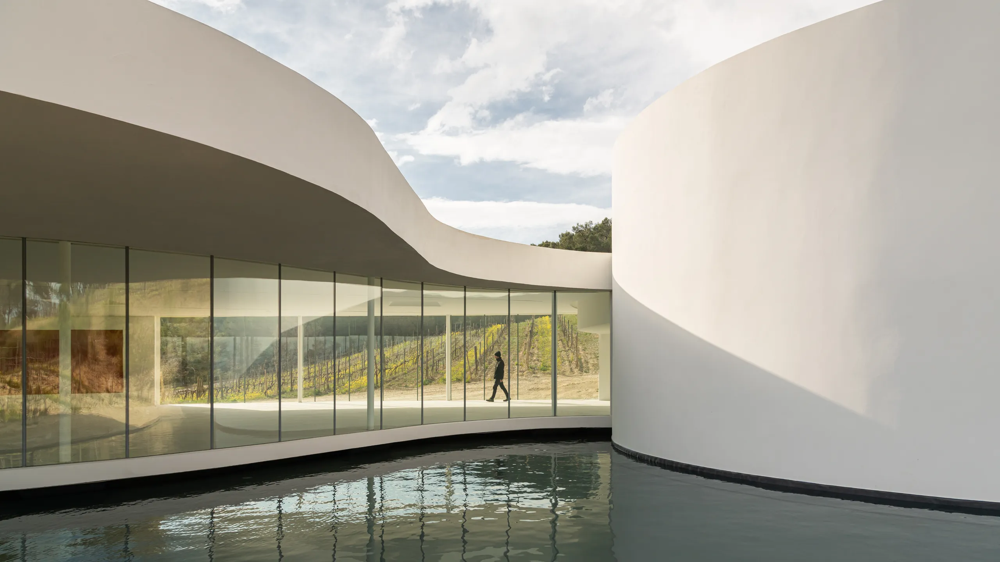

PAVILLON LA COSTE
L'HISTOIRE
L'histoire du Pavillon de la Fondation Luma à La Coste débute avec la vision de Maja Hoffmann, collectionneuse d'art et mécène suisse, pour créer un espace unique dédié à l'art contemporain. Situé dans le domaine viticole du Château La Coste, le projet est confié à l'architecte renommé Frank Gehry. L'idée était de concevoir un espace emblématique qui fusionnerait l'architecture exceptionnelle avec la nature environnante.
L'histoire de ce pavillon est étroitement liée à l'innovation architecturale. Frank Gehry, célèbre pour ses structures audacieuses, a conçu un bâtiment en acier spectaculaire, évoquant un assemblage sculptural de formes dynamiques. La structure se fond dans le paysage environnant, intégrant harmonieusement l'art, l'architecture et la nature.
Depuis son ouverture en 2018, le Pavillon de la Fondation Luma est devenu un lieu incontournable pour l'art contemporain. Il accueille des expositions, des événements artistiques et des programmes éducatifs, créant un espace dynamique où l'art dialogue avec l'architecture. Le pavillon incarne une convergence unique d'expressions artistiques et symbolise l'engagement envers la création contemporaine.
INFUENCE DE PIANO
L'influence de Renzo Piano sur le Pavillon de la Fondation Luma à La Coste se manifeste à travers une approche intégrée de la conception. Piano a cherché à créer une symbiose entre le bâtiment, le site naturel et l'art contemporain. Son attention méticuleuse à l'intégration du pavillon dans le paysage environnant en fait un exemple éloquent d'architecture respectueuse de l'environnement.
Piano, connu pour son équilibre entre le local et le global, a également insufflé au pavillon une identité qui lui est propre tout en le reliant à un contexte plus large. Le design du pavillon s'inspire des matériaux locaux et des traditions architecturales tout en incarnant une esthétique contemporaine qui transcende les frontières, offrant ainsi une expérience culturelle à la fois locale et internationale.
L'influence de Renzo Piano sur le Pavillon de la Fondation Luma se manifeste dans l'héritage de l'innovation architecturale. Son engagement envers des solutions techniques avancées et sa volonté d'explorer de nouvelles possibilités ont permis de réaliser un espace à la fois fonctionnel et esthétique, offrant une toile de fond dynamique pour l'art contemporain.
DÉCOUVRIR
Si l’article vous a plu, n’hésitez pas à lire celui sur le pavillon Resnick, une autre grande œuvre de Piano.